Space Checkers
The approved Space Play concept and screenshots from the running Android app. System bars are real Android UI. The app adapts to device size; the concept's phone frame is presentation only.
Installable debug APK · Design contract · Verification report
Selected concept
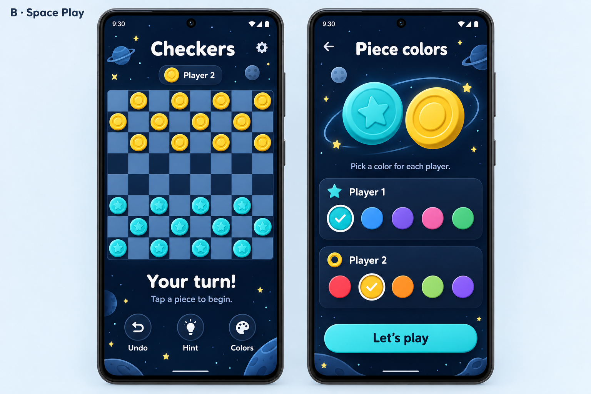
Play an alien or a friend
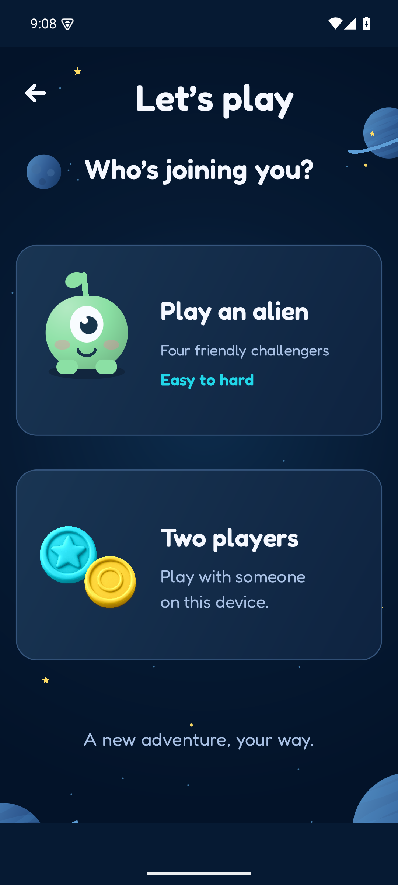
Choose a mode
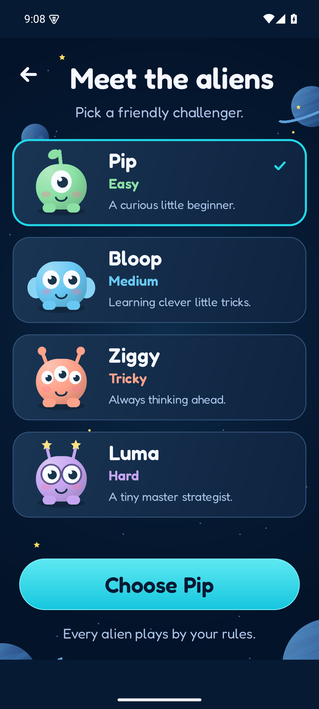
Four friendly difficulties
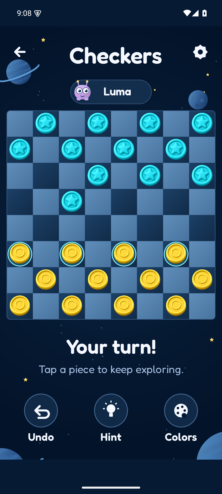
Play against Luma
Welcome and player choice
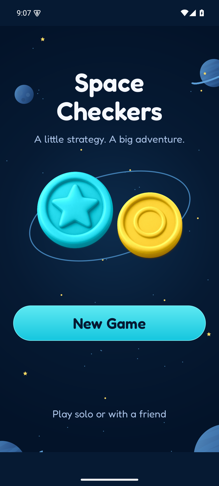
Welcome
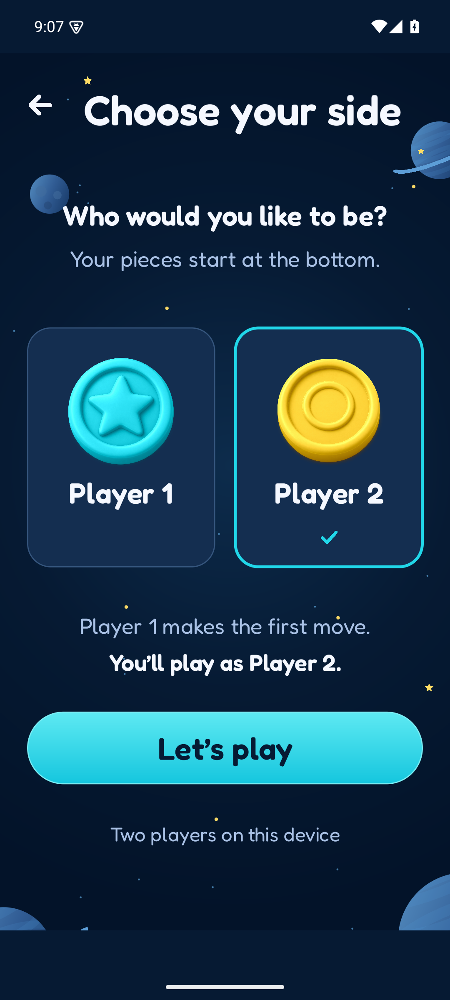
Choose your side
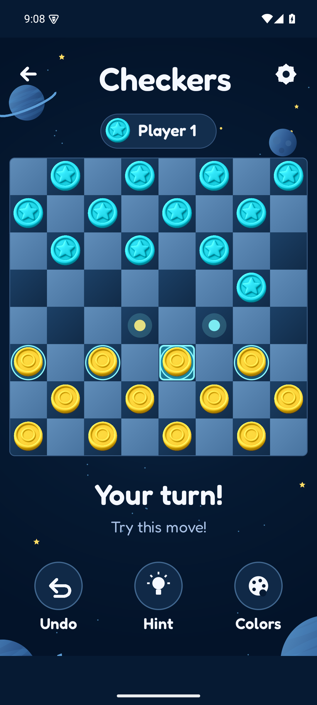
Player 2 perspective
Running Android app
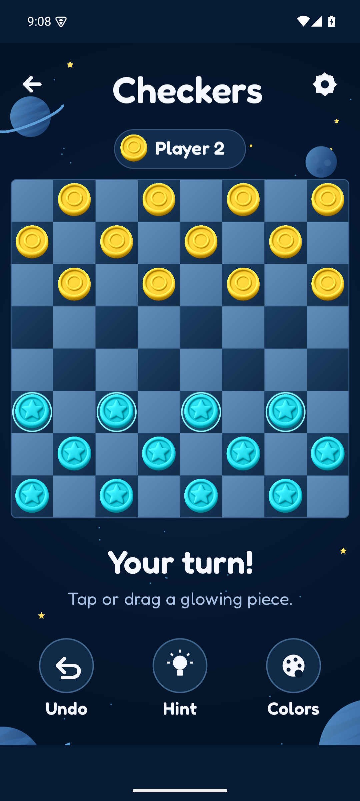
Game board
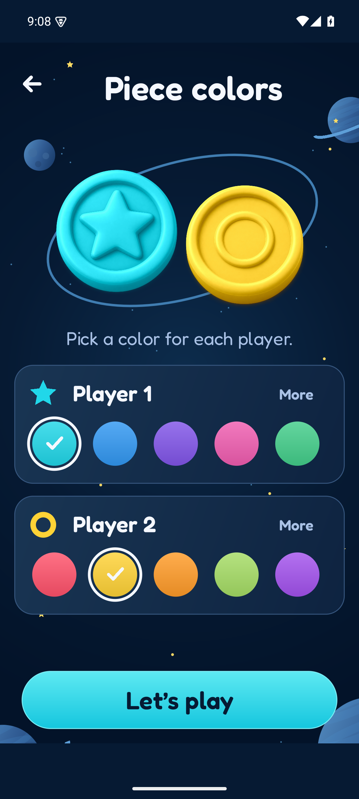
Piece colors
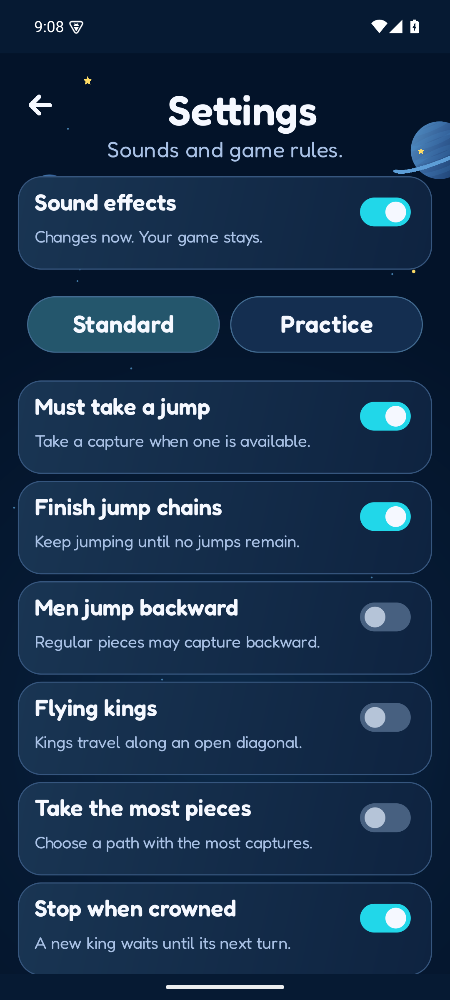
Rules
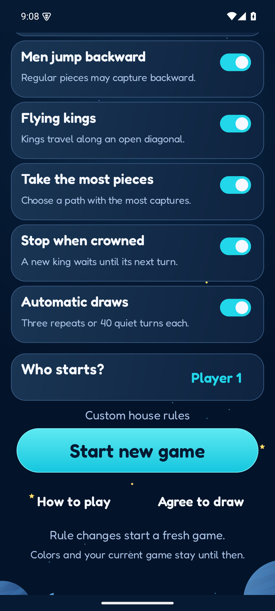
Rules, continued
Game states
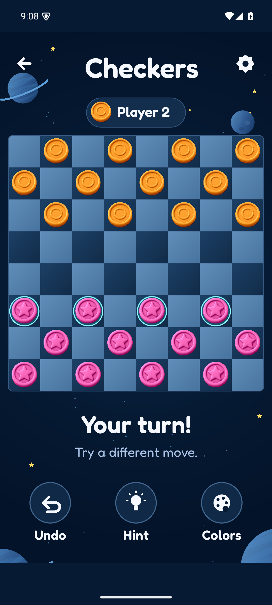
Custom colors
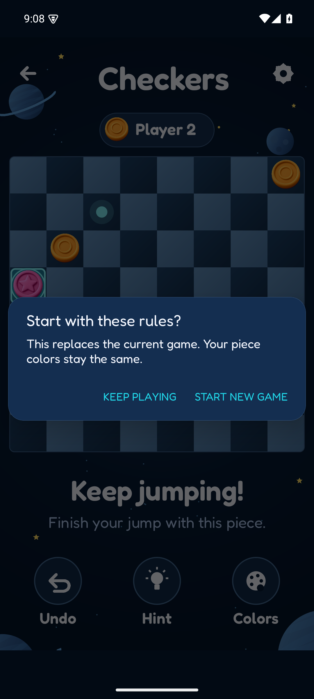
Multi-jump
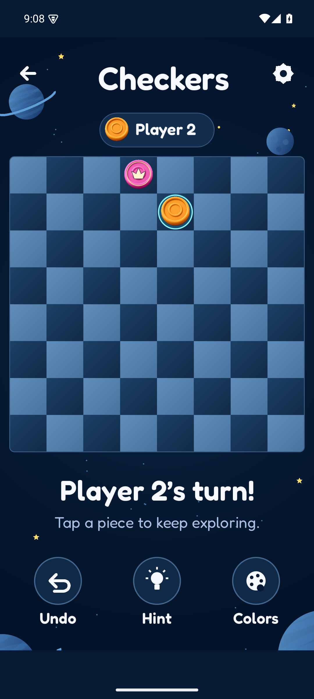
Promotion
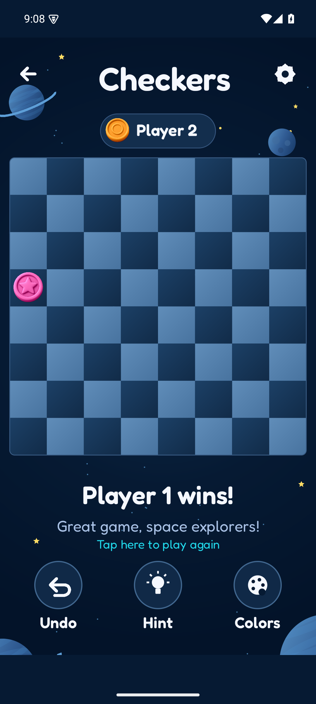
Win and replay
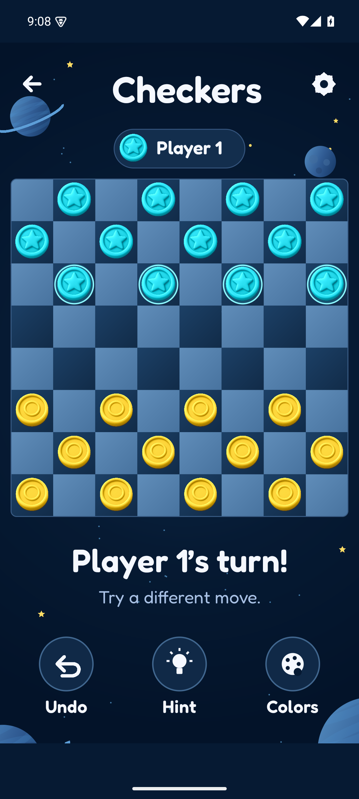
Movable pieces
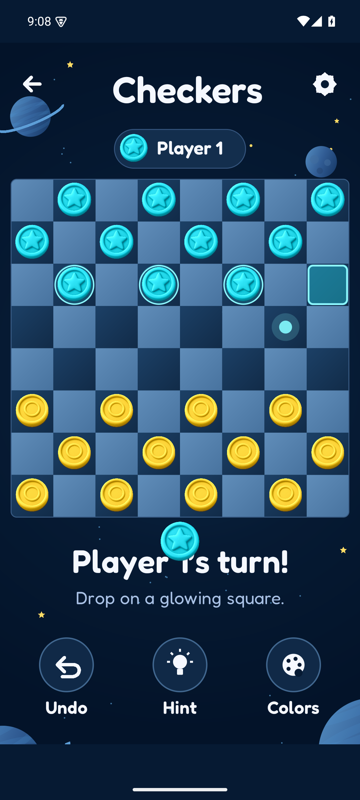
Drag and legal destinations
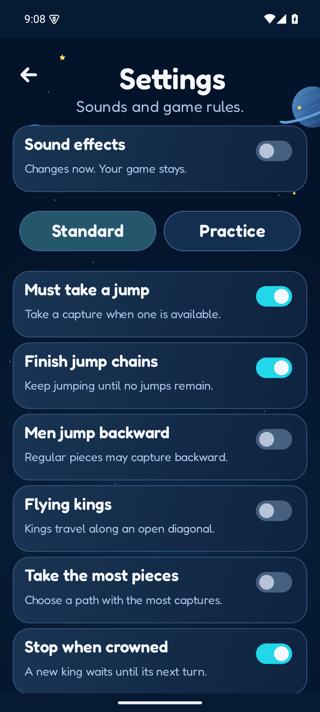
Sound settings